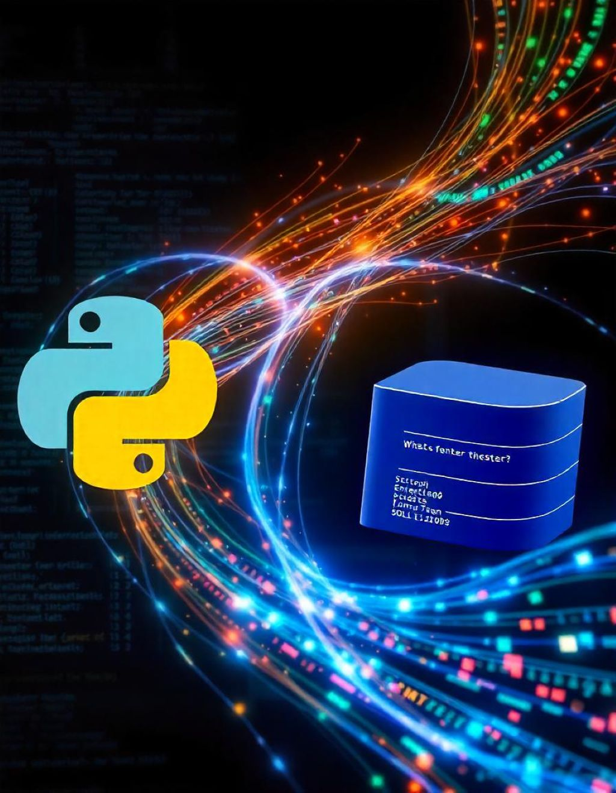

Domine os fundamentos da programação e crie seus próprios projetos!
⚡ Oferta por tempo limitado! Expira em: 24h ⏳
 📥 Baixe Agora e Comece Sua Jornada!📌 Linkedin para desenvolvedores
📌 Acesso a um grupo privado para suporte e networking
â "Simplesmente incrÃvel! Aprendi do zero e agora já consigo criar meus próprios programas!"
â "Muito didático e direto ao ponto. Recomendo!"
📥 Baixe Agora e Comece Sua Jornada!Olá! Meu nome é Wollacy Willyan de Carvalho, sou programador desde 2018 e atualmente atuo como desenvolvedor full-stack. Tenho experiência em backend, frontend e análise de sistemas, sempre buscando soluções eficientes e práticas. Meu objetivo com este ebook é tornar a programação acessÃvel para todos!